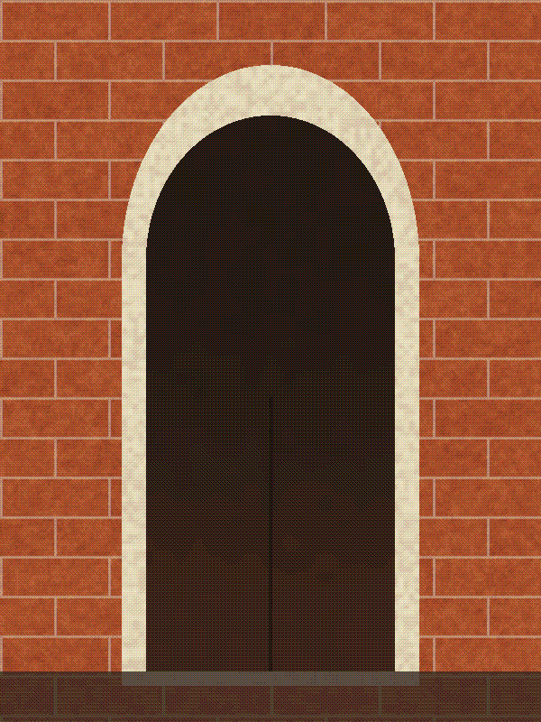

Words round pictures
A paragraph laid by the type tier beside two floated photographs. The boxes are reserved from the pictures' headers before their bytes arrive, so the words are in place first and nothing moves when the pictures land.
By the time the ferry reaches the jetty the sun is already low, and the water has gone the colour of brass. Someone on the planks is mending a net, someone else is counting crates, and nobody is in a hurry. The boards are soft with salt and the posts lean a little, the way old things lean when they have been trusted for a long time.

Up the lane the houses are built of laterite, cut warm from the ground and left to darken in the rain. Each doorway has its arch, each arch its border of lime, and behind the doors the evening is being cooked. You can smell coconut oil and fish. The pictures here were sized from their headers alone, long before they were done arriving, and the words found their places first.
Choosing how to lay the words.